01 / PARTI
Kristal Kapmaca
Parlayan kristalleri kap, arenanın yıldızı ol.
60 SANİYE ↗Arkadaşlarını çağır. Rengini seç.
Her turda başka bir oyunun yıldızı ol.
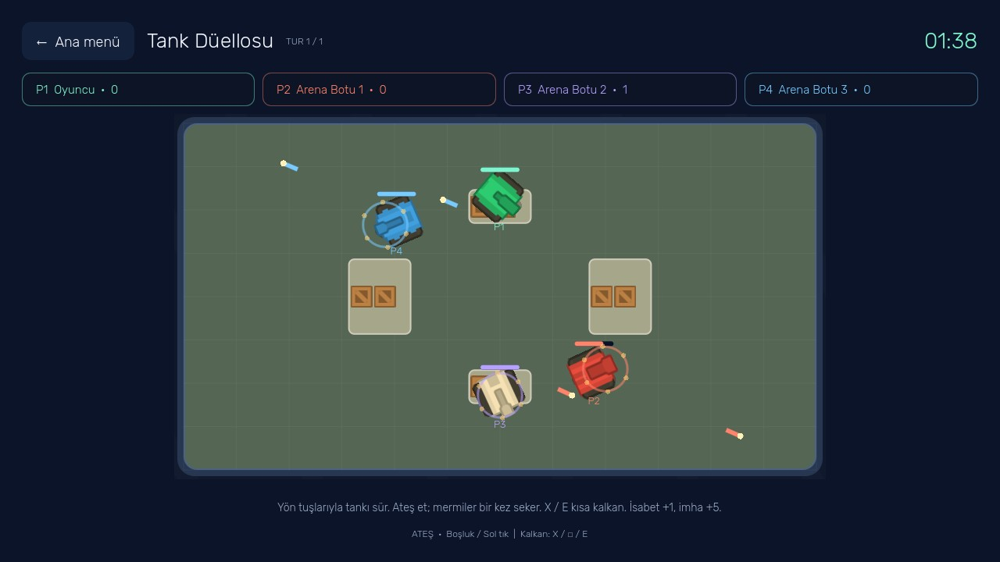
Üç boyutlu arenalardan neon sahalara.
32 oyun. Dövüş, tank, zıplama, spor ve klasikler.
Parlayan kristalleri kap, arenanın yıldızı ol.
60 SANİYE ↗
Doğru rengi bul. Zemin seni beklemeyecek.
75 SANİYE ↗
Dönen ışınlar, dört rakip, tek şampiyon.
90 SANİYE ↗
Kendi kaleni koru, diski rakibine gönder.
75 SANİYE ↗
Engelleri geç, turboya bas, öne fırla.
75 SANİYE ↗
Uzay dar, meteorlar fazla. Refleksine güven.
75 SANİYE ↗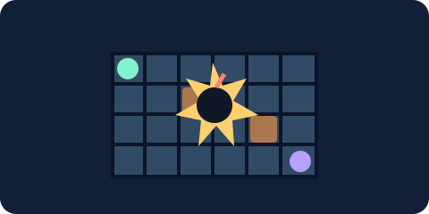
Bırak, kaç, patlat. Sandıkları aç, rakibini yakala.
90 SANİYE ↗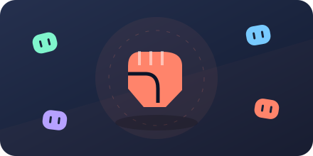
Rakibini sersemlet, kombonu sürdür.
90 SANİYE ↗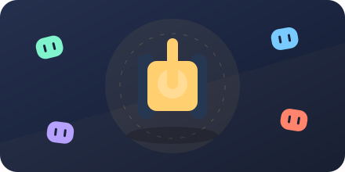
Siper al. Mermiyi duvardan sektir.
100 SANİYE ↗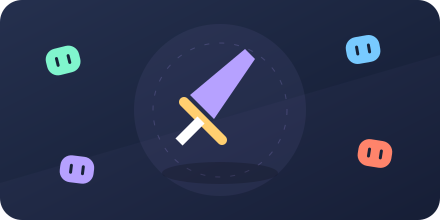
Mesafeyi koru, darbeyi savuştur.
90 SANİYE ↗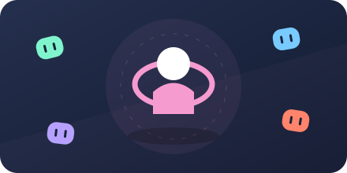
Halka küçülürken rakibini dışarı it.
90 SANİYE ↗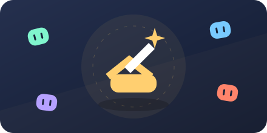
Rüzgârı hesapla, atışını yükselt.
100 SANİYE ↗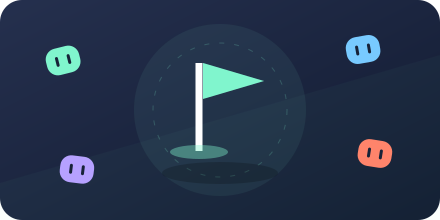
Rakibin bayrağını kendi üssüne taşı.
90 SANİYE ↗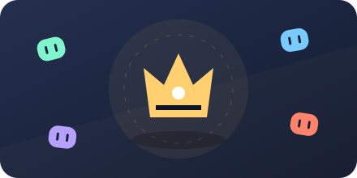
Tahtın sahibi ol, puanları topla.
90 SANİYE ↗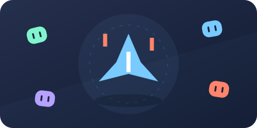
Lazerlerden sıyrıl, filoyu dağıt.
90 SANİYE ↗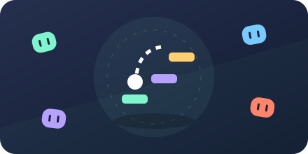
Platformdan platforma, zirveye doğru.
100 SANİYE ↗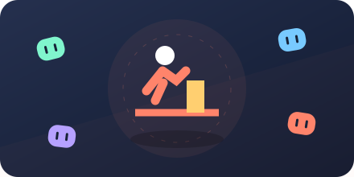
Koş, zıpla, alçak engelin altından kay.
90 SANİYE ↗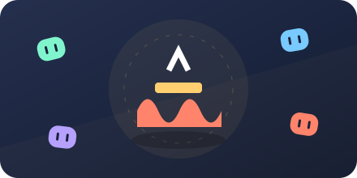
Lav yükselirken güvenli platformu bul.
100 SANİYE ↗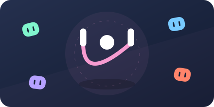
Ritmi yakala, seriyi bozma.
90 SANİYE ↗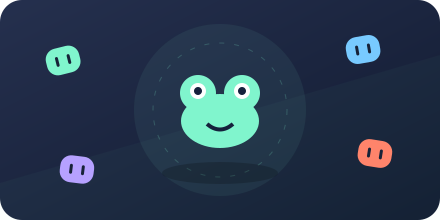
Trafiği ve nehri aş, yuvaya ulaş.
90 SANİYE ↗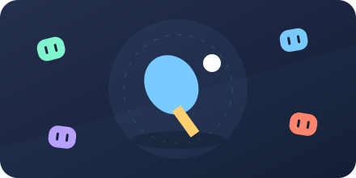
Raketini kaydır, topa açı ver.
90 SANİYE ↗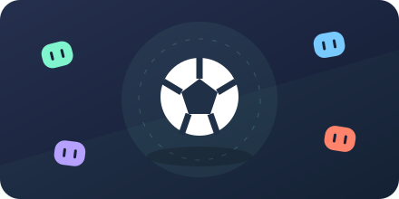
İki takım, tek top, büyük mücadele.
100 SANİYE ↗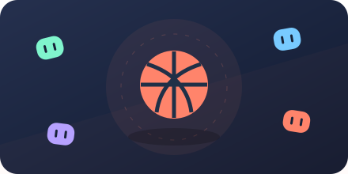
Gücünü ayarla, potayı bul.
90 SANİYE ↗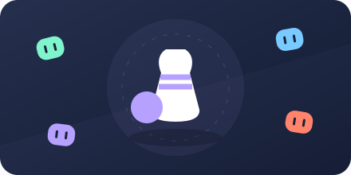
Hizayı tut, on lobutu tek atışta devir.
100 SANİYE ↗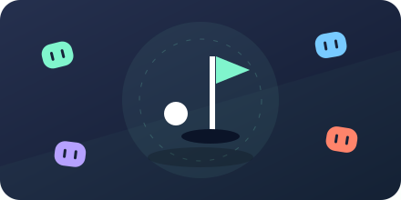
Duvarları hesapla, deliği az vuruşla bul.
110 SANİYE ↗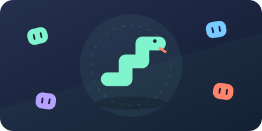
Yemi kap, kuyruğuna dolanma.
90 SANİYE ↗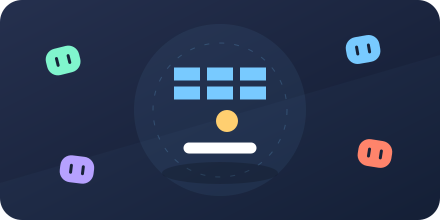
Raketini sür, tüm blokları kır.
100 SANİYE ↗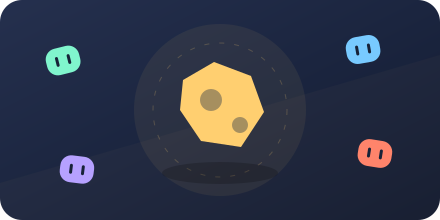
Büyük kayaları parçala, uzayı temizle.
90 SANİYE ↗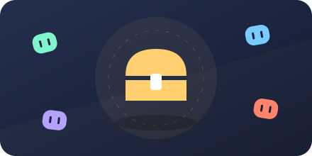
Çantayı doldur, ganimeti bankana götür.
90 SANİYE ↗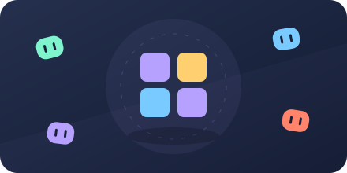
Işıkları hatırla, diziyi tekrar et.
100 SANİYE ↗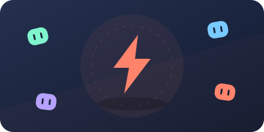
Yeşili bekle; erken basan kaybeder.
90 SANİYE ↗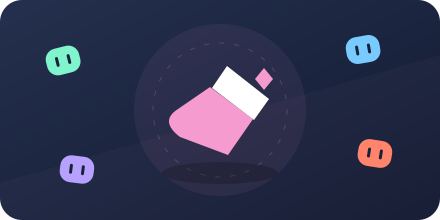
Arenayı kendi rengine boya.
100 SANİYE ↗Uygulamadan alınan gerçek oyun görüntüleri.
İki, üç veya dört kişilik maç aç. Eksik oyuncuları üç zorluk seviyesindeki botlar tamamlasın.
Aynı Wi-Fi, LAN veya PC'lerde Radmin ağı. Bir kişi oda açar, diğerleri IP adresiyle katılır. Android ve Windows birlikte oynar.
Tek PC'de iki gamepad + bir klavye/mouse ile üç kişi. Android'de de gamepad. Xbox ve PlayStation tuşları, ayarlanabilir titreşim.
Bağlanamıyorsan Windows Güvenlik Duvarı'nda oyuna özel ağ izni ver. Oyun UDP 28742 portunu kullanır. Radmin PC içindir; telefon aynı Wi-Fi/LAN üzerinden katılır.
Gamepad'i USB veya Bluetooth üzerinden cihazına bağla. Aynı PC'de Gamepad ile birlikte oyna ekranından kontrolcüleri seç. Klavye/mouse yalnızca tek oyuncuya atanır. Ana hamle A / × / Boşluk / sol tık, ikinci hamle X / □ / E / sağ tıktır. Mobilde iki ayrı hamle düğmesi görünür. Tuş gösterimi, ölü bölge ve titreşim gücü Ayarlar → Gamepad ve titreşim bölümünden değiştirilir.
Xbox 360 bağlantısı uygun USB adaptörü gerektirebilir. PS4 ve diğer kontrolcülerin algılanması ile titreşim, cihazın sürücüsüne bağlıdır. Sol çubuk / yön tuşlarıyla menüde gezin; A / × ile seç, B / ○ ile geri dön. Oyun içindeki Ana menü maçtan döner, ana menüdeki Çık uygulamayı kapatır. Bu sürüm gamepad rumble kullanır; direksiyon tipi kuvvet geri bildirimi içermez.
Güncel sürüm · v1.2.0
Android 7.0 ve üzeri · Yatay ekran
Dokunmatik + gamepad
Windows 10/11 · 64 bit · OpenGL 3.3
Klavye/mouse + ayrı gamepad'ler
Android: APK'yı aç ve sorulduğunda tarayıcın için uygulama yükleme izni ver. Sonra oyunu başlat.
Windows: İndirdiğin EXE'yi çalıştır. Yayıncı sertifikası olmadığı için Windows indirme uyarısı gösterebilir.
Sürüm notu: 32 oyun tam tur testinden geçti. Kategori, arama, favoriler ve 32. oyuna gamepad ile ulaşma dahil 26 arayüz kontrolü geçti. Dört ayrı süreçle 32 oyunda LAN bağlantısı sınandı. Xbox 360 tabanlı kontrolcüde giriş ve Windows titreşimi doğrulandı. Telefon, PS4 ve gerçek Radmin ağı testleri henüz tamamlanmadı.